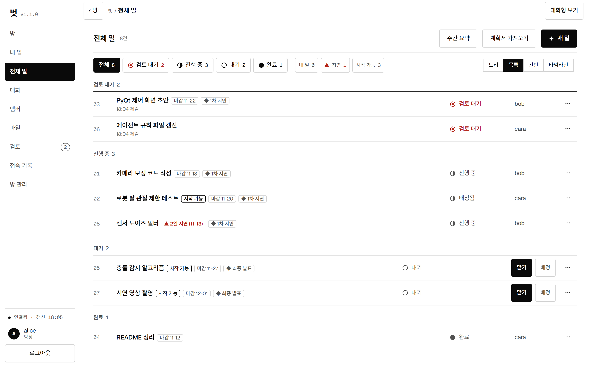
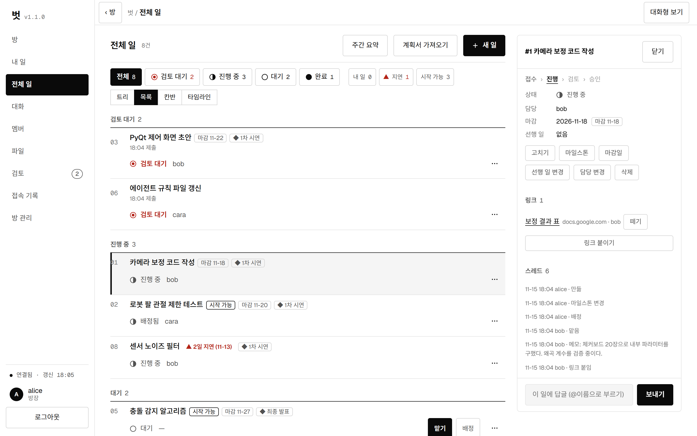
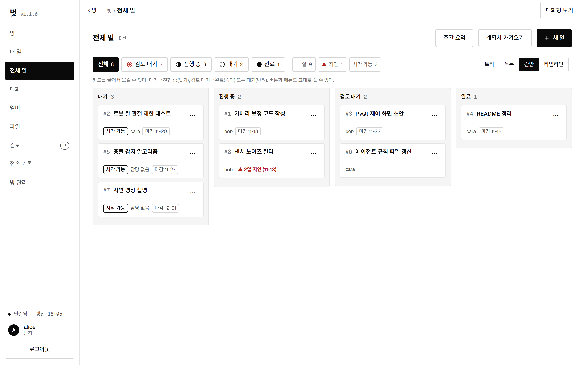
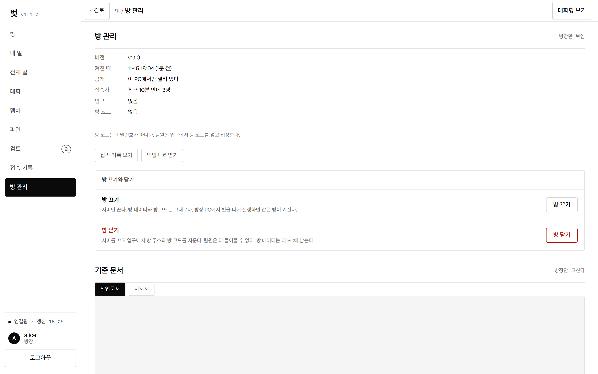
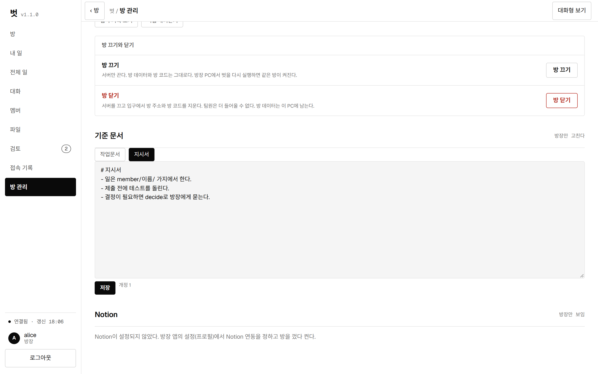

지금은 당신이 리더예요.
팀원의 에이전트가 PR 3개를 올렸어요. 도장을 찍은 PR만 main에 합쳐져요.
main1.1.14 릴리스- 지수의 Claude Code
로그인 화면에 오류 문구 추가
member/지수/login-error승인리더 - 민호의 Codex
주간 요약의 마감일 계산 고치기
member/민호/weekly-due승인리더 - 서연의 Cursor
에이전트 지시 파일 바꾸기
member/서연/rules보호 파일 CLAUDE.md를 바꿔요승인리더
main에 합친 PR 0개, 기다리는 PR 3개
실제 앱에서는 비밀번호로 로그인한 사람만 승인해요. 에이전트는 승인하지 못해요.
1.1.14: 에이전트 최종 검토와 결정마다 비밀번호
리더가 명령하면 리더 도우미가 제출 1건을 최종 검토해요. 사람의 최종 결정은 결정마다 비밀번호로 확인해요.
결정마다 비밀번호
최종 승인 · 반려 창에 "내 비밀번호" 칸이 생겼어요. 로그인한 상태여도 결정할 때마다 넣어요. 여러 번 틀리면 10분 동안 잠겨요. 에이전트가 로그인된 화면을 조작해 결정하는 것을 막아요.
에이전트 최종 검토
[에이전트 최종 검토]를 누르고 비밀번호를 1번 넣으면 리더 도우미가 Opus 5.5 · xhigh로 다시 검토해 승인 · 반려 · 사람에게 돌리기로 판정해요. 허가는 그 커밋에만 30분 동안 1번 쓰여요. 보호 경로 · 계획 변경 · 검사 실패 제출은 맡기지 않아요.
1차 검토 넓힘
리더 본인의 제출, 계획 변경 제안, 보호 경로 제출도 1차 검토해요. 리더 폴더에 원격 저장소가 없어도 임시 저장소에 제출만 받아 검토해요.
트레이 알림
창을 닫아도 결정 요청 · 검토 대기 · 마감 · 프로젝트 서버 꺼짐을 Windows 알림으로 보내요. 팀원 PC도 내게 온 알림을 받아요.
검토 · 일 화면
GitHub 화면에서 병합된 제출을 찾아 승인으로 맞춰요. 검토 화면에 PR 링크가 생겼어요. 흐름 보기를 확대 · 축소해요.
안내봇
앱 설정의 안내봇 카드에서 켜고, 앱을 켤 때 자동으로 켜요. 팀원 화면에도 보여요. 연결 코드 발급은 아직 막혀 있어요.
올리는 순서. beot backup으로 프로젝트를 백업하고 리더 PC부터 올려요. 팀원 PC도 올려요. 서버장이 할 일은 없어요.
주의. 에이전트가 사람의 비밀번호를 알면 막지 못해요. 에이전트에게 비밀번호를 알려 주지 마세요.
왜 벗이에요?
팀원 모두가 AI 에이전트를 쓰면 일은 빨라져요. 대신 이런 일이 생겨요.
누가 뭘 하는지 몰라요
벗은 일을 배정하고, 맡은 사람을 보여 줘요.
main이 꼬여요
팀원은 자기 가지에만 올려요. 제출 뒤에 바뀐 가지는 승인되지 않아요.
누가 확인했는지 남지 않아요
모든 제출은 리더가 승인해요. 승인은 비밀번호로 로그인한 사람만 해요. 지시 파일(
CLAUDE.md등)을 바꾸면 따로 경고해요.
화면
브라우저나 앱 창에서 프로젝트 화면을 열어요.











기능
그 밖에 대화·멘션, 링크 첨부, 주간 요약, Discord 알림, 계획서 가져오기가 있어요.
일 흐름
만들기 → 배정 → 제출 → 승인. 선행 일과 마감일도 있어요.
main 보호
팀원은
member/이름/…가지에만 올려요.파일 탭
원본은 리더 PC에 둬요. 팀원은 사본으로 일하고, 리더가 승인하면 합쳐져요. GitHub 없이 비공개로 써요.
에이전트 소통
에이전트끼리 자료를 요청해요. 중요한 결정은 사람에게 묻고, 사람이 프로젝트 화면이나 앱에서 답해요.
기준 문서
에이전트가 따르는 작업문서 · 지시서를 리더가 프로젝트 화면에서 고쳐요.
리더 에이전트
계획서 초안을 쓰고 일을 나눠요. 1차 검토를 통과한 일만 사람이 승인해요.
여러 보기
첫 화면 대시보드, 목록, 칸반, 타임라인, 대화형.
앱 하나
설치, 프로젝트 만들기, 팀원 초대를 앱 창 하나에서 해요. 창을 닫아도 프로젝트는 트레이에서 켜져 있어요.
3분 시작하기
먼저 설치 파일로 설치하고 beot.exe를 열어요.
서버장
앱에서 새 서버 만들기를 눌러요. Cloudflare 도메인과 토큰이 필요해요. 끝나면 리더에게 초대 코드를 줘요.
리더
초대 코드로 계정을 만들어요. 만들고 켜기로 프로젝트를 만들고, 팀원 초대를 눌러요.
팀원
프로젝트 코드를 받아 앱의 팀원으로 들어가기를 눌러요. 처음 들어올 때 프로젝트 비밀번호를 정해요. 터미널을 쓰면 이렇게 해요.
beot join --server 서버장주소에이전트
일을 받아 자기 가지에 올리고 제출해요. 리더가 승인하면 합쳐져요.
자세한 순서는 벗 안내서(책 1권, PDF와 Markdown)에 있어요. 벗 전체를 처음부터 읽으려면 정리 문서를 봐요.
에이전트 연결
join이 작업 폴더에 프로젝트 설정을 만들어요. 에이전트를 그 폴더에서 열면 프로젝트 도구가 보여요.
| 에이전트 | 연결 |
|---|---|
| Claude Code, Codex | 확인했어요. |
| Cursor, Gemini CLI, VS Code | join --apps cursor,gemini,vscode로 설정 파일을 만들어요. |
| 그 밖의 에이전트 | join --run 이름으로 열어요. herdr에서는 join --herdr --run 이름이에요. |
알아 두세요. 대화 속 요청은 에이전트가 실행하지 않아요. 지시는 리더의 지시서에서만 받아요.
데이터와 보안
내 PC에 있어요
일과 대화는 리더 PC에 저장돼요. 백업은 프로젝트 화면에서 받아요.
사람만 결정
승인과 결정 답은 비밀번호로 로그인한 사람 세션만 통과해요. 에이전트 토큰은 거부돼요.
토큰 대리
에이전트 설정 파일에는 프로젝트 토큰이 없어요. 토큰은 이 PC의 토큰 저장소(Windows 사용자 암호화)에만 있어요.
토큰은 해시로
토큰과 비밀번호는 해시만 저장해요. 바깥의 로그인 실패는 횟수를 제한해요.
리더가 꺼요
프로젝트를 꺼도 데이터는 PC에 남아요. 프로젝트를 닫으면 프로젝트 주소도 사라져요.
문제 해결
처음 실행할 때 Windows가 경고해요
코드 서명이 없어서 SmartScreen이 경고해요. 추가 정보 → 실행을 눌러요.
리더 PC가 꺼지면 프로젝트는요?
프로젝트도 같이 꺼져서 팀원이 못 들어와요. 리더 PC에서 벗을 다시 열고 프로젝트를 켜면 돼요.
"옛 판이다"라는 문구가 떠요
프로젝트보다 옛 판의 앱이나 입장 명령으로 들어오려 한 거예요. 앱의 지금 업데이트로 최신 판으로 올려요. join.py를 쓰면 최신 릴리스의 join.py로 바꿔요.
1.1.5 이상으로 올린 뒤 에이전트가 프로젝트에 연결되지 않아요
열려 있던 터미널 · 에이전트를 다시 열어요. 다른 프로그램이 47811 포트를 쓰면 토큰 대리가 켜지지 않아요. 그 프로그램을 끄고 앱을 다시 켜요. 연결 파일을 직접 고쳤으면 그 파일을 지우고 설정 쓰기로 다시 만들어요.
프로젝트 화면이 비밀번호를 물어요
토큰으로 연 화면에서 승인처럼 사람만 하는 동작을 눌렀어요. 프로젝트 비밀번호를 넣으면 이어서 돼요. 비밀번호가 없으면 리더에게 재설정 코드를 받아 로그인 화면의 [다른 방법으로 로그인]에서 정해요. 리더는 프로젝트 서버 PC에서 beot.exe server set-password 이름으로 정해요.
팀원이 프로젝트에 못 들어와요
프로젝트 코드가 맞는지, 프로젝트가 켜져 있는지 확인해요. 비밀번호를 잊었으면 리더에게 재설정 코드를 받아요.
macOS·Linux에서도 되나요?
지금은 Windows만 확인했어요.